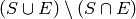
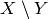

Two and three dots with log¶
Remember it’s different for git diff - see Two and three dots with diff.
Logging without dots¶
Two dots is the default in git log. That is, if you do:
git log master topic
what you’ll get is the same as if you asked for:
git log master..topic
So logging without dots is the same as Logging with two dots.
Logging with two dots¶
Let’s say you asked for this:
git log start-branch..end-branch
You will see a log of a series of commits. The commits will be all the commits reachable from end-branch that are not reachable from start-branch.
What does “reachable” mean. A commit B is “reachable” from another commit A if you can go make a line by drawing from A back to any of its parents, and so on, backwards from parents, in order to reach B. Also, you can always reach a commit from itself (you can “reach” A from A and B from B).
Obviously git log start-branch..end-branch cannot include the commit pointed to by start-branch because you can always reach start-branch from itself.
Let’s say we have this history:
H--I--J topicB
/
| E---F---G topicA
|/
A---B---C---D master
— so what would git log topicB..topicA show? From topicA we can reach G, F, E, D, C, B, A. From topicB we can reach J, I, H, D, C, B, A. So, the commits reachable from topicA not reachable from topicB are G, F, E.
Logging with three dots¶
You asked for this:
git log start-branch...end-branch
Now there are three dots between start-branch and end-branch. This
finds all commits that are reachable from start-branch, OR that are
reachable from end-branch BUT that are NOT reachable from both
start-branch AND end-branch. Put another way, if  is the set
of all commits that can be reached from start-branch and
is the set
of all commits that can be reached from start-branch and  is the
set of all commits that can be reached from end-branch then the commits
returned from the three dot version of log are:
is the
set of all commits that can be reached from end-branch then the commits
returned from the three dot version of log are:

where  denotes the set of members of  that are not
in set
that are not
in set  .
.
By example, from the history above, let’s think about what would we get from:
git log topicB...topicA
From topicA we can reach this set of commits — G, F, E, D, C, B, A. From topicB we can reach J, I, H, D, C, B, A. That means that we can reach D, C, B, A from both of topicA AND topicB. So the returned commits would be G, F, E, J, I, H.